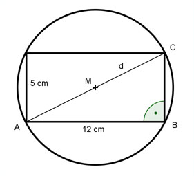

Aufgabe 82 Aus einem Baumstamm soll ein rechteckiges Kantholz mit den Maßen 5 cm und 12 cm hergestellt werden. Welchen Durchmesser d muss der Baum haben?  Satz von Pythagoras im Dreieck ABC: d2 = 122 + 52 d2 = 144 + 25 d2 = 169 |√ d = 13 cm